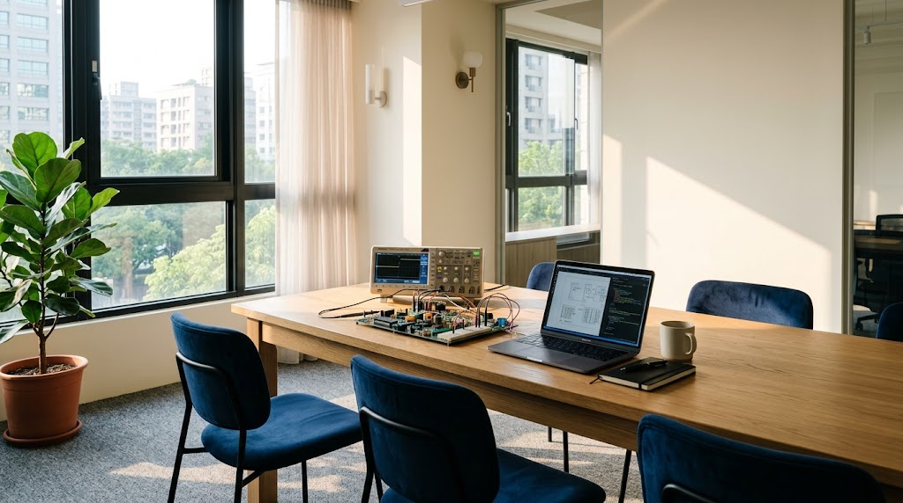

選型與設計導入
從規格對照、替代料建議到樣品申請，PM 與 FAE 一起坐進客戶的開發會議，而不是等到缺料才出現。
- 規格比對與 Pin-to-Pin 替代建議
- 樣品、EVK 與原廠技術文件
- Design Review 與導入時程控管

代理商真正的工作，是把「規格」
翻譯成「可以量產的決定」。
隆電是專注於電子零組件代理的技術型通路商。產品線橫跨無線通訊模組、車用與工業感測、功率與類比半導體、光通訊高速介面、電池，以及停產與長生命週期料件。
我們不轉賣庫存，也不只遞交報價。選型比對、樣品支援、設計審查、認證文件、量產交期——每一個環節都有明確的負責人與紀錄，因為零件出問題的時候，客戶需要的是答案，不是轉接。
集團據點遍及台北、上海、深圳、香港與日本，服務全球 ODM／OEM 與品牌客戶。
從規格對照、替代料建議到樣品申請，PM 與 FAE 一起坐進客戶的開發會議，而不是等到缺料才出現。
硬體與軟體兩線 FAE，處理電源、電池、射頻與感測器的實測問題；客訴走 RMA 分析流程，回覆有依據。
台北總倉與海外 HUB 倉並行，溫濕度記錄、批號追溯、寄售與 VMI，依客戶產線節奏調整而不是依合約條文。
ISO 9001:2015 品質系統、供應商評鑑、出口管制最終用途聲明與保存期限管理，文件在需要時拿得出來。

把原廠的技術，變成你產線上的良率。這是 FAE 每天在做的事。
我們的品質政策只有六個字。它們不是標語，而是每年管理審查、內部稽核與外部驗證時，必須拿得出證據的三件事。
每年排定內部訓練，把原廠的技術、市場的變化與客戶的經驗，變成團隊共同的知識。
從選型建議到流程自動化，持續改善不是專案，而是日常工作的一部分。
交期、庫存週轉、客戶滿意度——每一項都有目標、有追蹤、有檢討。
總部・業務、應用工程與倉儲
華東客戶服務與業務
華南製造聚落與出貨支援
轉口、物流與 HUB 倉
原廠窗口與日本市場